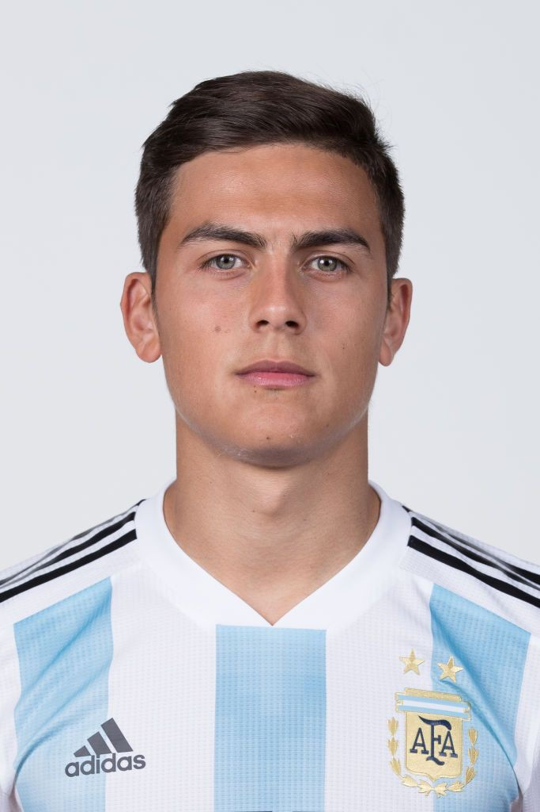

Christiano Ronaldo
Forward
Cristiano Ronaldo (born 5 February 1985) is a Portuguese professional footballer who plays as a forward for Serie A club Juventus and captains the Portugal national team.

Paulo Dybala
Forward
Paulo Dybala (born 15 November 1993) is an Argentine professional footballer who plays as a forward for Serie A club Juventus and the Argentina national team.

Matthijs De Ligt
Defender
Matthijs de Ligt (born 12 August 1999) is a Dutch professional footballer who plays as a defender for Serie A club Juventus and the Netherlands national team.